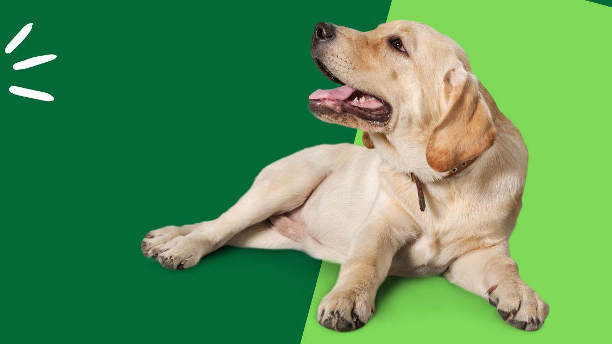

How To Care For Your Senior Dog
Golden Years: A Comprehensive Guide on How to Care for Your Senior Dog

As our beloved furry friends age, their needs evolve, and it becomes
crucial to adapt our care routines to ensure their comfort and
well-being during their golden years. In this guide, we'll explore the
essential aspects of how to care for a senior dog, providing them with
the love and attention they deserve.
Regular Veterinary Check-ups:
Frequent vet visits are even more critical as your dog ages. Regular
check-ups help detect and address potential health issues early,
ensuring your senior dog receives prompt medical attention.
Balanced Nutrition for Senior Dogs:
Senior dogs often have different nutritional requirements than younger
counterparts. Choose a high-quality senior dog food that addresses
their changing needs, including joint support, easy digestibility, and
controlled calorie content to manage weight.
Maintain a Healthy Weight:
Weight management is crucial for senior dogs, as excess weight can
exacerbate age-related issues like arthritis. Monitor their weight and
adjust their diet and exercise routine accordingly.
Joint Health Support:
Arthritis and joint problems are common in senior dogs. Provide joint
supplements or food formulated with glucosamine and chondroitin to
promote joint health and ease any discomfort.
Regular, Gentle Exercise:
While their energy levels may decrease, regular exercise remains
essential for senior dogs. Tailor activities to their abilities,
incorporating short, gentle walks, swimming, and interactive playtime
to keep them active and maintain muscle tone.
Comfortable Sleeping Area:
Provide a cozy and comfortable bed for your senior dog. Orthopedic
beds can offer extra support for achy joints, ensuring a good night's
sleep.